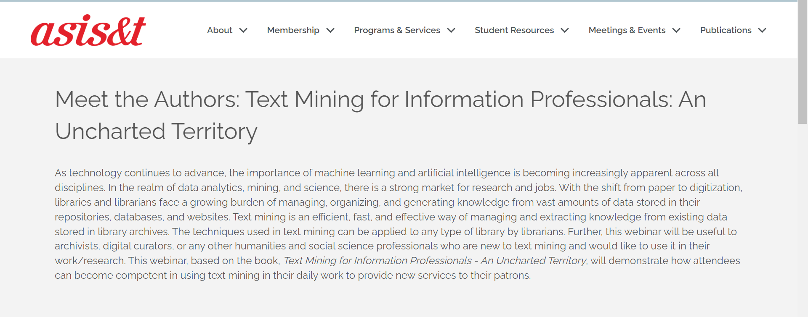

Media Coverage
Meet the Authors: Text Mining for Information Professionals: An Uncharted Territory
I was invited by Association for Information Science and Technology (ASIS&T), a preeminent professional association in information science, to give a talk on the book! The webinar will take place on 7th December 2023. Please register here: https://t.co/IKjjK1Yhl7

IFLA SCITECH Webinar: Text and Data Mining Work at Virginia Tech University
Libraries International Federation of Library Associations & Institutions (IFLA), an international body of libraries and information professionals, invited following faculty/librarians/researchers who submitted their practical experience of using text mining in their libraries or research in the story section of the book:
- Leverage Undergraduate Student Researchers to Deliver Text Data Mining Services to Library Users
- TDM Working Group at the University Libraries at Virginia Tech
- Visualizing Topic Networks in Personal Correspondence: The Richards/Turner Letters
- Natural Language Processing (NLP) for Sensory Science
Mention on University of Toronto’s Website
The book was listed in the University of Toronto’s major Text and Data Mining (TDM) platforms and collections!
Included in BIG BOOK OF R
The book was included in the Big Book of R which is a collection of almost 400 R programming books.
- Posted on:
- April 22, 2023
- Length:
- 1 minute read, 191 words
- See Also: